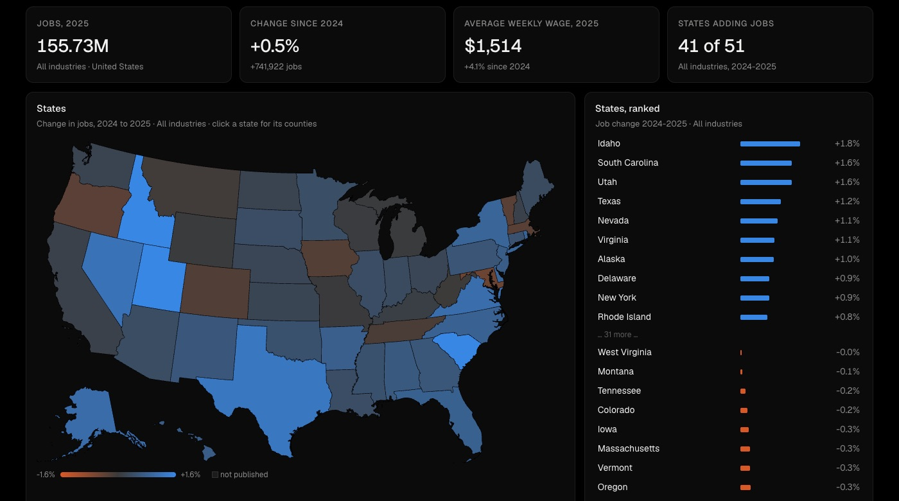

Dashboard · Data visualization · 2026-10
Where America's Jobs Grew
An interactive, Tableau-style dashboard of US jobs and pay for every state and county, 2019-2025: click a state to drill in, click an industry to filter everything.

Annual averages only, and counties show all industries only: BLS withholds most county industry detail. Figures BLS doesn't publish show as gaps, never as zero.
01 — The problem
Analysts spend much of their time building dashboards in tools like Tableau or Power BI, which need licences and accounts to share. Can a full interactive dashboard (filters, a clickable map with drill-down, cross-filtering charts) be built straight in the browser on official data, and published free to anyone?
02 — What I built
A dashboard on the Bureau of Labor Statistics' Quarterly Census of Employment and Wages, which counts nearly every job in the country:
- Filters: area, year, comparison year (last year or pre-pandemic 2019), industry, and job change vs weekly wage.
- Map: states coloured by the chosen measure. Click one to zoom into its counties.
- KPI tiles, a ranking, a trend line and an industry breakdown that all respond to each other. Click an industry bar and everything filters to it.
- Works on a phone, with tooltips and keyboard access.
03 — How it was built
- 01
Shape the data for the dashboard
A standard-library Python script pulls BLS's annual files for 2019–2025 (77 downloads, about 96 MB) and keeps what the dashboard needs. That's the US and 51 states for 12 industry groups, plus 3,202 counties for all industries: a 0.69 MB data file. Numbers BLS withholds to protect individual employers stay missing; they never become zero.
- 02
Build the views and wire them together
D3 draws a US map from Census boundaries, a ranked list, a trend line and an industry bar chart. One small state object (area, year, comparison, industry, measure) drives every view, and every click changes that state and redraws. That's how cross-filtering works: clicking Texas updates the tiles, ranking and charts, and clicking "Construction" refilters the map.
const S = { year: 2025, base: "prev", ind: "total", measure: "change", sel: null }; - 03
Test it like a user would
Clicking through it in Chrome found five bugs.
- Empty trend chart. A D3 scale given one argument treats it as the output range, not the data range.
- Stalled zoom. The zoom animation froze when the tab wasn't focused.
- Focus box. Keyboard focus drew a white box around Texas.
- Phone labels. On phones, labels were cut off or collided.
- CDN risk. Headless Chrome left the page blank when libraries came from a CDN.
All five are fixed, and the libraries now ship with the page.
- 04
Prove the numbers
check.pyconfirms that all 26,618 values in the dashboard's data equal BLS's own files, and that the states add up to the national total. It then recomputes the tiles for two views from scratch. The dashboard showed exactly the same: 155.73M jobs, +0.5%, +741,922, $1,514, 41 of 51 states for 2025, and 16.79M leisure & hospitality jobs, +2.0% since 2019.
04 — Results
- 2025: 155.73M jobs, +0.5% on 2024, with the average weekly wage up 4.1% to $1,514. 41 of 51 states added jobs, led by Idaho (+1.8%), South Carolina and Utah (+1.6%). DC fell the most (−2.4%).
- Industries, 2024–25: education & health services (+3.2%) and construction (+1.4%) grew; natural resources & mining (−2.1%), information (−1.9%) and manufacturing (−1.2%) shrank.
- Since 2019: US jobs are up 5.1%. Idaho (+16.2%), Utah (+14.5%) and Texas (+12.1%) lead; DC (−4.4%), Hawaii (−2.2%) and Vermont (−0.8%) are still below pre-pandemic.
05 — What I'd do next
- Add quarterly data and a monthly unemployment layer.
- Shareable links that save the current filters in the URL.
- Metro areas as a third drill-down level.